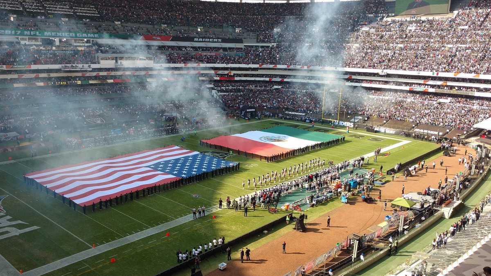

Brock Purdy Was Basically Perfect, and Mexico City Got to Watch
49ers 35, Vikings 10. The best defense in football sent everybody, and our quarterback missed five throws all night. Melbourne, Santa Clara, Mexico City. If this ends with a trophy, call us world champs and mean it.

I called it 24 to 20. I wrote it down, in public, on this website, like an idiot. I said nobody was scoring 40 on Brian Flores and that this was going to be a slugfest.
We had 28 by halftime.
I've never been so happy to be that wrong. I was on the couch with the chili going, phone face down like I promised, and by the second quarter I'd flipped it back over because I needed somebody, anybody, to see what I was seeing. The group chat was just a wall of fire emojis and one guy who kept typing "WHO IS BLITZING WHO" in all caps. Nobody answered him. Nobody had to.
49ers 35, Vikings 10. In Mexico City. Against the best defense in football. And our quarterback was basically perfect.
Twenty six throws. Look at them.
Gold is a completion, red is a touchdown, empty is an incompletion. 21 of 26, 255 yards, 3 touchdowns, no picks, a 146.0 passer rating. Not in order. I'm a fan, not a play by play guy.
Five incompletions. That's it. That's the whole list of things Brock Purdy did wrong on Sunday night, and I'd bet a couple of those were throwaways.
And the part that makes me want to run around the block? Flores did exactly what everybody knew he'd do. He sent the house. Five or more rushers on 20 of Brock's 26 dropbacks, and Brock went 17 of 19 against it. Seventeen of nineteen! Against the blitz that sacked Jordan Love eight times a week earlier! I spent all of last week reading about how Flores had never lost to a Kyle Shanahan offense, and I believed it, and I was scared of it, and Brock just stood in there and made the guy pay on basically every snap.
Kyle said afterward, "You can't hesitate versus those guys. You've got to let it rip." Brock said Kyle told him the same thing all week: "Dude, you've got to be aggressive. Don't second guess yourself." I love that the plan was that simple. I love even more that he pulled it off.
That's back to back games now where he's been somewhere north of 145 in passer rating, after Dallas. It's his tenth career game over 140, which is the most in NFL history, and we're 10 and 0 in those games. Ten and oh! I'm not even going to pretend I'm being objective here. When the Mexico City crowd started chanting "MVP" during that long fourth quarter drive, I chanted it too. Alone. In my living room. My wife came in to ask what was wrong.
The first half I'm going to rewatch on Thanksgiving
First drive, 72 yards, and George Kittle catches a 17 yard touchdown. Okay. Fine. Good start. Then Minnesota goes 90 yards right back at us and Aaron Jones walks in, and I thought, here we go, this is the slugfest I predicted.
Nope.
Next drive, Kittle again from 8 yards out. He said after the game he basically caught that one with his chin because he wasn't ready for it, which is the most George Kittle sentence ever spoken. He also passed Terrell Owens on Sunday for the second most receiving yards in franchise history. Terrell Owens! I used to have his jersey. I'm going to need a minute.
Then the two minutes that ended the game, even if the clock said there was a whole half left.
Mike Evans, in his first game back from that Achilles mess, goes up in the right corner of the end zone and catches a 4 yard touchdown with one hand. One hand! I said in the preview I'd take one catch. He had six for 109 yards. I am never doubting the man again. Kittle said that on the first drive he came back to the huddle going "Oh my gosh, how good is Mike Evans?" and George, I was yelling the same thing at my TV, so we're on the same page.
And then the very next play from scrimmage, Kirk Cousins throws a ball over the middle toward Tai Felton, Ji'Ayir Brown reads it the whole way, picks it off, and takes it 18 yards to the house. First touchdown of his career. Two scores in ten seconds of game clock. 28 to 10.
Do you know how long it took me to stop laughing? Cousins has now thrown a pick six against us for two different teams in the same season. Jaden Dugger took one back on him at Levi's on November 8 when he was still a Raider. Kirk, buddy. I'm sorry. Actually I'm not.
28 points in one half. The Vikings hadn't given up more than 23 in a whole game all year.
The part I don't want to talk about
Colton McKivitz got carted off in the second quarter. Kyle said, "We think it's broken and dislocated, so that was really crushing." He's done for the year. That one hurts, because McKivitz has been the guy nobody talks about who just keeps lining up at right tackle and doing his job, and you could hear the stadium go quiet. Vederian Lowe steps in now. I'm going to be holding my breath on every rush off that side for the rest of the season, and I'm not going to apologize for it.
Get well, Colton. You earned better than that.
And then they just took the clock and walked out
Second half, the defense kept doing defense things. Deommodore Lenoir punched the ball out of Justin Jefferson's hands right after a 25 yard catch on Minnesota's first drive of the third quarter, which is exactly the kind of play I'd sold my soul for in the preview. Then early in the fourth we put together a 98 yard, 13 play drive that ate seven minutes, and Christian McCaffrey finished it from 6 yards out. That's a touchdown in eight straight games for him. Eight! He said of Brock afterward, "He's one of the best players I've ever played with." Christian has played with some people. That's not nothing.
By midway through the fourth Brock was on the sideline with a 25 point lead, and Minnesota was putting Carson Wentz in. That's how you know you've broken somebody.
We're 9 and 1. Best start since 2019. Still the No. 1 seed in the NFC. Seattle comes to Levi's next Sunday, and I'm already nervous about that one, because I'm a 49ers fan and that's what we do.
So, about being world champs
This is the part I can't stop thinking about this morning.
We opened this season at the MCG in Melbourne, the first regular season NFL game ever played in Australia, and we beat the Rams 27 to 7 in front of a crowd of over 100,000 people. Purdy threw three touchdowns that night too. Then we spent two months doing our thing all over the States. And now Mexico City, 7,300 feet up, 85,612 people, chanting MVP at our quarterback.
Three countries. Two hemispheres. Wins in every one of them.
You know how people make fun of American teams calling themselves "world champions" when they only ever played other American teams? Every baseball fan in Europe has an opinion about it. Well. Not us. Not this year. If this team goes all the way, and I'm not saying it out loud yet, I'm just typing it, then they won't just be Super Bowl champs. They'll have actually gone out and beaten people on the other side of the planet and in another country's capital on the way there.
World champions. For real this time. I want the banner to say it.
I know. It's November. Seattle's next. A right tackle just broke his leg. I've been a Niners fan long enough to know exactly how this can go sideways in January, and I've got the scar tissue from February to prove it. But I watched Brock Purdy carve up the best defense in the league at altitude in front of a stadium that sounded like Levi's on its best day, and I've decided I'm allowed to dream on a Monday morning.
Nine wins in ten tries says the dreaming's going fine. Let's keep going.
If you missed it, here's my preview with the terrible 24 to 20 prediction, the night it all started in Melbourne against the Rams, and last week's 46 to 40 shootout in Dallas. Where Brock sits all time is on the Purdy passer rating page, McKivitz and everybody else banged up is on the 49ers injury report, and the rest of the run is on the 49ers schedule hub.
More coverage: 49ers · Bay Area NFL · Bay Area Sports Blog home